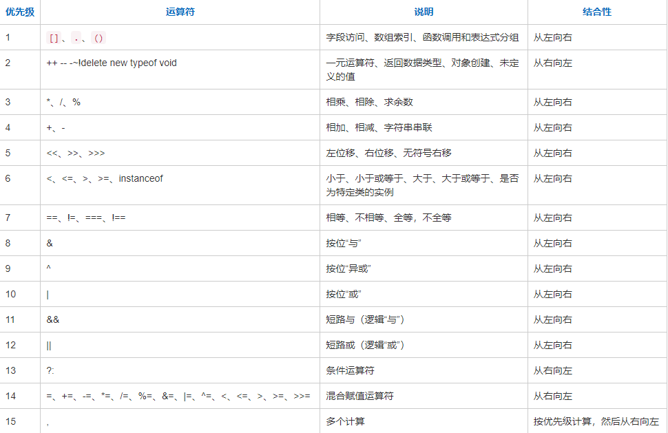

JS基础语法 JavaScript组成：
1.ECMAScript 版本3,4,5,6,7
2.DOM 文档
3.BOM 浏览器对象
1 2 3 4 5 6 7 8 9 10 11 12 13 14 15 16 17 <script src="dome.js" > alert('执行不了这里的代码' ); </script> alert('hello world' ); prompt("请输入" , "xxx" ); console .log('hello world' ); document .write('<h1>hello world</h1>' );
常量和变量 概念：值不可以被修改的叫做常量，值可以被修改的叫做变量。
数据类型 1.基本数据类型：
数字 number
布尔值 boolean(true,false)
字符串 String 所有带单引号或双引号的都叫字符串
2.复合/引用数据类型：
数组 对象
3.特殊数据类型：
null 空
undefined 未定义
NaN (not a number)
1 2 3 4 5 6 7 8 9 10 var num = 10 ;console .log(typeof 100 ); console .log(typeof typeof undefined );
变量命名 标识符：自定义的名字叫标识符，变量名也是标识符。
命名规则：
1.只能由数字,字母,下划线和美元符号($)组成。
2.不能以数字开头。
3.不能保留字和关键字。
4.大小写敏感 age Age 是两个完全不同的变量。
5.见名思意(使用英文全称)。
6.驼峰命名法 className 下划线命名法 class_name
算数运算符 运算符
1.算术运算符 + - * / %(取余)
2.关系运算符 > < >= <= == != === !==
3.逻辑运算符 && || !
4.一元运算符 ++ --
5.赋值运算符:
<1>基本赋值运算符 =
<2>复合赋值运算符 += -= ... x=
表达式：任何数据和运算符组成的式子叫做表达式。
1.表达式的值
2.表达式的功能
算术运算符 1 2 3 4 5 6 7 8 9 10 11 12 13 14 15 16 17 18 19 20 21 console .log("hello" + 100 ); console .log(100 - "20" ); console .log(100 - "20a" ); console .log(10 + true ); console .log(10 - false ); console .log(10 + null ); console .log(10 - undefined ); console .log(10 + NaN ); console .log(0.8 - 0.1 ); console .log(10 / 0 ); console .log(-10 / 0 );
赋值运算符 1 2 3 4 5 6 7 8 9 var num = 10 + 20 ;num = num + 10 ; console .log(num); var num = 10 ;num += 10 ; console .log(num);
一元运算符 1 2 3 4 5 6 7 8 9 10 11 12 13 14 15 16 17 18 19 20 var a = 5 ;console .log(a++); console .log(++a); var a = 5 ;console .log(a--); console .log(--a);
强制数据类型转换 1 2 3 4 5 6 7 8 9 10 11 12 13 14 15 16 17 18 19 20 21 22 23 24 25 26 console .log(Boolean (3.14 )); console .log(Boolean (0 )); console .log(Boolean ("hello" )); console .log(Boolean ("" )); console .log(Number ("100" )); console .log(Number ("100a" )); console .log(parseInt ("100" )); console .log(parseInt ("100a" )); console .log(parseInt ("10b0a" )); console .log(parseInt ("c10b0a" )); console .log(parseInt ("3.14" )); var str1 = "110100" ; console .log(parseInt (str1, 2 )); var str2 = "64" ; console .log(parseInt (str2, 8 )); var str3 = "34" ; console .log(parseInt (str3, 16 )); console .log(parseFloat ("3.14" ));
关系运算符
< >= <= == != === !==
1 2 3 4 5 6 7 8 9 10 11 12 13 14 15 16 17 18 19 20 21 22 23 24 25 console .log(100 == 100 ); console .log("A" < "a" ); console .log("abcd" > "adc" ); console .log(1 == true ); console .log(0 == false ); console .log("10" == 10 ); console .log(10 == "10a" ); console .log(NaN == NaN ); console .log("10" === 10 ); console .log(Number ("10" ) === 10 ); console .log(Number (null )); console .log(Number (undefined )); console .log(null == undefined );
逻辑运算符 与运算
格式：表达式1 && 表达式2
规律：只有当两个表达式都为true的时候,整个表达式才为真。
短路操作：当表达式1为false的时候,表达式2就不执行了,就直接得出结果为false。
或运算
格式：表达式1 || 表达式2
规律：只有当两个表达式都为false的时候,整个表达式才为假。
短路操作：当表达式1为true的时候,表达式2就不执行了,就直接得出结果为true。
非运算
格式：!表达式
规律：先将表达式的值自动数据类型转换成布尔值,然后再取反。
运算符优先级 
流程控制语句 顺序结构 顺序结构：代码自上而下顺序执行。
1 2 3 4 5 6 var num1 = 10 ;var num2 = 20 ;var tmp = num1;num1 = num2; num2 = tmp; console .log("num1:" + num1 + ",num2:" + num2);
分支结构 分支结构/选择结构/条件结构：根据不同的条件,执行不同的操作。
单分支语句 语法：
if(判断的条件){
执行语句;(判断条件为true的时候执行)
}
1 2 3 4 var num = 10 ; if (num % 2 == 0 ) { alert("这是一个偶数" ); }
双分支语句 语法：
if(判断的条件){
执行语句;(判断条件为true的时候执行)
}else{
执行语句;(判断条件为false的时候执行)
}
1 2 3 4 5 6 var num = 7 ;if (num % 2 == 0 ) { alert("这是一个偶数" ); } else { alert("这是一个奇数" ) }
多分支语句 语法：
if(判断条件1){
执行语句1;
}else if(判断条件2){
执行语句2;
}else if(判断条件2){
执行语句2;
}
...
else{
执行语句;(上述所有条件不成立,执行这里)
}
1 2 3 4 5 6 7 8 9 10 11 12 13 14 15 16 17 var score = 99 ;if (score > 85 ) { alert("优秀" ); if (score > 95 && score <= 100 ) { alert("奖励1000元" ); } else if (score > 90 && score <= 95 ) { alert("奖励800元" ); } else { alert("奖励300元" ); } } else if (score >= 75 && score <= 85 ) { alert("良好" ); } else if (score >= 60 && score < 75 ) { alert("及格" ); } else { alert("不及格" ); }
switch语句 语法：
switch(表达式){
case 常量1:
执行语句1;
break;
case 常量2:
执行语句2;
break;
...
default:
当上述所有的case选项都匹配失败,执行这里。
break;
}
执行过程：
1.计算switch()语句表达式的值
2.和case后续的值进行匹配,匹配成功,执行对应case选项下的执行语句。
1 2 3 4 5 6 7 8 9 10 11 12 13 14 15 16 17 18 19 20 21 22 23 24 25 26 27 28 29 30 31 32 33 34 35 36 37 38 39 40 41 42 43 var grade = "A" ;switch (grade) { case "A" : alert("80~100" ); break ; case "B" : alert("70~79" ); break ; case "C" : alert("60~69" ); break ; case "D" : alert("<60" ); break ; default : alert("error" ); break ; } var month = 4 ; var year = 2000 ; switch (month) { case 1 : case 3 : case 5 : case 7 : case 8 : case 10 : case 12 : alert("31天" ); break ; case 2 : if (year % 4 == 0 && year % 100 != 0 || year % 400 == 0 ) { alert("29天" ); } else { alert("28天" ); } break ; default : alert("30天" ); break ; }
三目运算符 格式：
表达式1 ? 表达式2 : 表达式3;
执行:
1.先去判断表达式1是否为真
2.表达式1为真,直接去执行表达式2
3.表达式1为假,直接去执行表达式3
1 2 var num = 8 ;num % 2 == 0 ? alert("偶数" ) : alert("奇数" );
循环结构 循环结构：重复去做一件事情。
while循环 格式：
while(循环条件){
循环语句;
}
执行：
1.如果循环条件成立就执行循环语句,直到循环条件不成立为止。
2.循环条件可以写任意的表达式,最后都会自动数据类型转换为布尔值。
3.不能让循环条件永远成立,会造成死循环。
1 2 3 4 5 var i = 0 ;while (i < 10 ) { document .write("hello world!</br>" ); i++; }
do_while循环 语法：
do{
循环语句;
}while(循环条件);
执行：
1.white循环：先判断循环条件。
2.do_while循环：先去执行一次循环语句,再去判断循环条件。
1 2 3 4 var num = 5 ;do { alert("hello world" ); } while (num > 5 );
for循环 格式：
for(表达式1; 表达式2; 表达式3){
执行语句;
}
1 2 3 4 5 6 7 8 9 10 11 12 13 14 15 16 17 18 19 20 var sum = 0 ;for (var i = 0 ; i <= 100 ; i++) { sum += i; } console .log(sum);for (var i = 1 ; i <= 100 ; i++) { if (i == 5 ) { break ; } document .write(i + "</br>" ); } for (var i = 1 ; i <= 100 ; i++) { if (i == 5 ) { continue ; } document .write(i + "</br>" ); }
函数 无参数无返回值 函数声明
语法：
function 函数名() {
函数体(具体要执行的代码);
}
函数调用
格式：函数名();
1 2 3 4 5 6 function print ( for (var i = 0 ; i < 10 ; i++) { document .write("hi!</br>" ); } } print();
有参数无返回值 函数声明
形参：形式上的参数。
语法：
function 函数名(形参1, 形参2...) {
函数体(具体要执行的代码);
}
函数调用
实参：实际传入的参数。
格式：函数名(实参1, 实参2...);
传参：用实参给形参赋值。
1 2 3 4 5 6 function print (n ) for (var i = 0 ; i < n; i++) { document .write("hi!</br>" ); } } print(6 );
有参数有返回值 return 关键字
函数运行的时候,如果遇到return关键字,整个函数会终止。
语法：
function 函数名(形参1, 形参2...) {
函数体(具体要执行的代码);
return 表达式;
}
1 2 3 4 function add (num1, num2 ) return num1 + num2; } console .log(add(5 , 6 ));
arguments 每一个函数内部都有一个arguments,系统内置的。
arguments用来存储实际传入的参数。
属性：
arguments.length 输出当前里面存储的参数个数。
使用arguments[下标];访问某一个数据,下标是从0开始的。
1 2 3 4 5 6 7 8 function sum ( var res = 0 ; for (var i = 0 ; i < arguments .length; i++) { res += arguments [i]; } return res; } console .log(sum(10 , 20 , 30 ));
函数作用域 任何程序在执行的时候都要占用内存空间内。函数调用的时候也要去占用内存空间。
垃圾回收机制：
调用函数的时候,系统会分配对应的空间给这个函数使用(空间大小一般由这个函数里声明的变量和形参决定)。
当函数使用完毕以后,这个内存空间要释放,还给系统。
在函数内部声明的变量和形参是属于当前函数的内存空间里的。
内存管理机制：
在函数中声明的变量和形参,会随着函数的调用被创建,随着函数的调用结束而销毁。
在函数中声明的变量和形参,有效范围是当前函数(当前函数的大括号),叫做局部作用域。
就近原则：
离哪个作用域近,就使用哪个作用域内的同名变量。
1 2 3 4 5 6 7 8 9 10 11 12 13 14 15 16 17 18 19 20 21 22 23 24 25 26 27 28 29 var a = 2 ;function show ( a++; alert(a); } show(); show(); console .log(a); function show ( var a = 2 ; a++; alert(a); } show(); show(); console .log(a); var a = 10 , b = 20 ;function show (a ) var b = 100 ; a += 5 ; alert(a + "," + b); } show(a); console .log(a + "," + b);
函数递归 递归：一种编程的写法。
1.函数自己调用自己。
2.一般情况下有参数。
3.一般情况下有return。
方法：
1.先去找临界值,即无需计算,获得的值。
2.找这一次和上一次的关系。
3.假设当前函数已经可以使用,调用自身计算上一次。
1 2 3 4 5 6 7 function sum (n ) if (n == 1 ) { return 1 ; } return sum(n - 1 ) + n; } console .log(sum(100 ));
数组 声明数组 数组：用一个变量存储一堆数据的数据结构。数组的变量存储的是数组的地址。
声明数组：
1.通过new创建数组。
2.省略new运算符创建数组。
注：上述两种方法,传入参数只有一个并且是数字的时候,是声明数组的长度。
3.数组常量进行赋值[]。
数组的属性：
数组.length 返回数组【元素】的个数。
1 2 3 4 5 6 var arr = new Array (100 , true , "hello" );var arr1 = Array (100 , true , "hello" );var arr2 = [100 , true , "hello" ];var arr3 = Array (10 ); console .log(arr[1 ]); console .log(arr3.length);
数组遍历 1 2 3 4 5 6 7 8 9 var arr = [10 , 20 , 30 , 40 , 50 ];for (i = 0 ; i < arr.length; i++) { document .write(arr[i] + "</br>" ); } for (i in arr) { document .write(arr[i] + "</br>" ); }
数组方法 push与pop 栈结构：
push
格式：数组.push(参数1,参数2...);
功能：给数组的末尾添加元素。
返回值：新增元素以后数组的长度。
pop
格式：数组.pop()
功能：从数组末尾取下一个元素。
参数：无
返回值：取下一个元素。
1 2 3 4 5 6 7 8 9 var arr = ["北京" , "上海" , "广州" ];var res = arr.push("深圳" , "重庆" , "香港" );console .log(arr); console .log(res); var arr2 = ["北京" , "上海" , "广州" ];var res2 = arr2.pop();console .log(arr2); console .log(res2);
shift与unshift 队列结构：
shift
格式：数组.shift()
参数：无
功能：从数组的头部取下一个元素。
返回值：取下的元素。
unshift
格式：数组.unshift(参数1,参数2...)
功能：从数组的头部新增元素。
返回值：新增元素以后数组的长度。
1 2 3 4 5 6 7 8 9 var arr = ["北京" , "上海" , "广州" ];var res = arr.shift();console .log(arr); console .log(res); var arr2 = ["北京" , "上海" , "广州" ];var res2 = arr2.unshift("深圳" , "重庆" , "香港" );console .log(arr2); console .log(res2);
concat与slice concat
功能：拷贝原数组,生成新数组。
格式：数组.concat(数组,数据...);
返回值：合并成的新数组,原数组不会改变。
注：就算传入是数组,数组元素中的元素要单独拆出来再进行合并。
slice
格式：数组.slice(start, end);
功能：可以基于当前数组获取指定区域元素[start, end],提取出元素生成新数组。
返回值：生成的新数组,原数组不会发生任何的改变。
1 2 3 4 5 6 7 8 9 10 11 var arr1 = [10 , 20 , 30 ];var arr2 = [50 , 60 , 70 ];var newArr = arr1.concat(arr2, "hello" , true );console .log(newArr); console .log(newArr.length); console .log(arr1); var arr = [10 , 20 , 30 , 40 , 50 , 60 ];var newArr = arr.slice(1 , 4 );console .log(newArr); console .log(arr);
splice splice
格式：数组.splice(start, length, 数据1, 数据2...);
功能：增加 删除 修改(先删除,后增加)
参数：
start 开始截取的位置
length 截取的元素的长度
第三个参数开始,在start位置,新增的元素。
返回值：截取下来的元素组成的数组。
1 2 3 4 5 6 7 8 9 10 11 12 13 14 15 16 var arr = [10 , 20 , 30 , 40 , 50 , 60 ];var res = arr.splice(2 , 0 , "hello" , "world" );console .log(arr); var arr = [10 , 20 , 30 , 40 , 50 , 60 ];var res = arr.splice(1 , 2 );console .log(arr); console .log(res); var arr = [10 , 20 , 30 , 40 , 50 , 60 ];var res = arr.splice(2 , 1 , "hello" );console .log(arr); console .log(res);
join join
格式：数组.join(字符串);
功能：将数组中的元素,用传入的拼接符,拼接成一个字符串。
返回值：拼接好的字符串。
1 2 3 4 var arr = [10 , 20 , 30 ];var res = arr.join("==" );console .log(arr); console .log(res);
reverse reverse
功能：数组逆序
1 2 3 var arr = [true , "hello" , 30 ];arr.reverse(); console .log(arr);
sort sort
格式：数组.sort()
功能：数组排序。默认从小到大排序,按照字符串排序。
1 2 3 4 5 6 var arr = [1 , 10 , 20 , 15 , 25 , 5 ];arr.sort(function (value1, value2 ) return value1 - value2; }) console .log(arr);
ECMA5新增数组方法 indexOf 格式：数组.index(item, start);
参数：item(任意的数据) start(下标,可以不传入,默认是0)
功能：在数组中查找第一次出现item元素下标,从start开始去查找
返回值：-1 没有查找到 >=0 查找到的元素下标
1 2 3 var arr = [10 , 20 , 30 , 40 , 50 , 20 , 30 ];var index = arr.indexOf(20 , 2 );console .log(index);
forEach 功能:循环数组
1 2 3 4 5 6 7 var arr = [10 , 20 , 30 , 40 , 50 , 20 , 30 ];arr.forEach(function (item, index, arr ) document .write(item + "," + index + "," + arr + "</br>" ); });
map 功能：映射数组
1 2 3 4 5 6 var arr = [10 , 20 , 30 , 40 , 50 ];var newArr = arr.map(function (item, index, arr ) return item * 1.3 ; }) console .log(newArr); console .log(arr);
filter 功能：过滤
1 2 3 4 5 6 var arr = [10 , 20 , 30 , 40 , 50 ];var newArr = arr.filter(function (item, index, arr ) return item > 20 ; }) console .log(newArr); console .log(arr);
some 功能：在数组中查找是否有符合条件的元素,有返回true,没有返回false。
短路操作：只要找到符合条件的元素,后面的循环就停止了。
1 2 3 4 5 6 7 var arr = [10 , 20 , 30 , 40 , 50 ];var res = arr.some(function (item, index, arr ) console .log(item); return item > 20 ; }) console .log(res); console .log(arr);
every 功能：在数组中查找每一个元素是否有符合条件,符合返回true,不符合返回false。
短路操作：只要找到不符合条件的元素,后面的循环就停止了。
1 2 3 4 5 6 7 var arr = [10 , 20 , 30 , 40 , 50 ];var res = arr.every(function (item, index, arr ) console .log(item); return item > 20 ; }) console .log(res); console .log(arr);
reduce 功能：归并数组
1 2 3 4 5 6 7 8 var arr = [10 , 20 , 30 , 40 , 50 ];var res = arr.reduce(function (prev, next, index, arr ) console .log(prev + "," + next); return prev + next; }) console .log(res);
声明提升 内存分配：一次分配
预编译：在所有代码运行之前,计算机将代码从头到尾看一遍。将这个程序需要运行的空间一次性分配好。函数也会声明提升。
声明提升：在当前作用域,声明变量和函数,会直接提升在整个代码的最前面运行。
1 2 3 4 5 6 7 8 9 10 11 12 13 14 15 16 alert(num); var num = 10 ;alert(num); show(); function show ( document .write("hello world" ); } function test ( num = 10 ; alert(num); } test(); alert(num);
二维数组 数组存储数据,数组中每一个元素,元素可以是任意的数据类型。
1 2 3 4 var arr1 = [10 , 20 , 30 ];var arr = [true , 100 , "hello" , arr1];console .log(arr1[1 ]); console .log(arr[3 ][1 ]);
排序算法 冒泡排序 规则：前后两个数两两进行比较,如果符合交换条件就交换两个数位置。
1 2 3 4 5 6 7 8 9 10 11 12 function bubbleSortAsc (arr ) for (var i = 0 ; i < arr.length - 1 ; i++) { for (var j = 0 ; j < arr.length - (i + 1 ); j++) { if (arr[j] > arr[j + 1 ]) { var tmp = arr[j]; arr[j] = arr[j + 1 ]; arr[j + 1 ] = tmp; } } } }
选择排序 规则：选出一个位置,这个位置上的数,和后面所有的数进行比较,如果比较出大小就交换两个数位置。
1 2 3 4 5 6 7 8 9 10 11 12 function changSortDesc (arr ) for (var i = 0 ; i < arr.length - 1 ; i++) { for (var j = i + 1 ; j < arr.length; j++) { if (arr[i] < arr[j]) { var tmp = arr[i]; arr[i] = arr[j]; arr[j] = tmp; } } } }
严格模式 "use strict"
严格模式：写在哪个作用域下,在哪个作用域下生效。不要把严格模式写在全局。
全局声明变量时,必须加var 1 2 3 4 5 6 function show ( "use strict" ; var num = 10 ; } show(); console .log(num);
this无法指向全局对象 1 2 3 4 5 "use strict" ;function a ( this .b = 10 ; } a();
函数内不能出现重名的属性 1 2 3 4 5 function show (num1, num1, num2 ) "use strict" ; console .log(num1 + "," + num2); } show(10 , 20 , 30 );
arguments对象不允许被动态改变 1 2 3 4 5 6 7 function show (num1, num2 ) "use strict" ; num1 = "hello" ; console .log(num1 + "," + num2); console .log(arguments [0 ] + "," + arguments [1 ]); } show(10 , 20 );
新增保留字 implements, interface, let , package, private, protected, public, static, yield
1 2 3 4 "use strict" ;function package (protected ) var implements; }
字符串 字符串声明 概念：所有带单引号或者双引号的都叫做字符串。
字符串声明：
1.通过new运算符去声明字符串。
2.省略new声明字符串。
3.字符串常量赋值。
1 2 3 4 5 6 7 8 9 10 11 var str1 = new String (100 );console .log(str1 + 20 ); console .log(typeof str1); var str2 = String (100 );console .log(str2 + 20 ); console .log(typeof str2); var str3 = "100" ;console .log(str3); console .log(typeof str3);
访问字符串的字符 格式：字符串.length 访问字符串中字符的个数
中文 utf-8(三个字符表示一个汉字) gbk(两个字符表示一个汉字) 在计数的时候都是当做一个汉字计数。
访问字符串中单个字符：
字符串.charAt(下标)
字符串[下标]
字符串是只读,字符串一旦被声明就没有办法被修改,如果要修改字符串,只能将原字符串销毁,重新生成新的字符串。
在JS中,字符串既是基本数据类型,又是复合数据类型。
1 2 3 4 var str = "hello北京" ;console .log(str.length); console .log(str.charAt(4 )); console .log(str[4 ]);
字符串遍历 1 2 3 4 var str = "hello北京" ;for (var i = 0 ; i < str.length; i++) { console .log(str[i]); }
字符串方法 toLowerCase() 转成全小写
toUpperCase() 转成全大写
在document.write()中使用,用特殊的样式输出该字符串。
big() 用大号字体显示字符串
blink() 显示闪动字符串(IE下无效)
bold() 使用粗体显示字符串
fixed() 以打字机文本显示字符串
strike() 使用删除线来显示字符串
fontcolor() 使用指定颜色来显示字符串
fontsize() 使用指定尺寸来显示字符串
link() 将字符串显示为链接
sub() 把字符串显示为下标
sup() 把字符串显示为上标
ASCII码值字符串 charCodeAt
格式：字符串.charCodeAt(下标);
功能：访问字符串中对应下标字符的ASCII码值。
String.fromCharCode
格式：String.fromCharCode(码值1,码值2...);
功能：将传入的ASCII码值转成对应的字符。
返回值：组成的字符串。
1 2 3 4 5 var str = "hello" ;console .log(str.charCodeAt(1 )); var str1 = String .fromCharCode(97 , 98 , 99 , 100 );console .log(str1);
字符串查找 indexOf
格式：supStr.indexOf(subStr, start);
参数：subStr(查找的字符串),start(从哪个下标开始去查找,如果不传入,默认从0开始)
功能：在supStr中查找subStr第一次出现的位置,从start这个位置开始查找。
返回值：-1 说明没有查找到
1 2 3 4 5 var supStr = "abcabcabc" ;var subStr = "abcd" ;var index = supStr.indexOf(subStr, 4 );console .log(index);
lastIndexOf
格式：supStr.lastIndexOf(subStr,start);
功能：在supStr中查找subStr最后一次出现的位置。
参数：第二个参数是开始查找的位置,查找的下标是从右往左的。
返回值：-1 没有查找到
1 2 3 4 5 var supStr = "abcabcabc" ;var subStr = "abc" ;var index = supStr.lastIndexOf(subStr);console .log(index);
search
格式：supStr.search(subStr);
参数：字符串/正则表达式
功能：在supStr中查找subStr最后一次出现的位置。
返回值：-1 没有查找到
1 2 3 4 5 var supStr = "Abcabcabc" ;var subStr = /abc/i ;var index = supStr.search(subStr);console .log(index);
字符串提取 substring
格式：字符串.substring(start, end);
功能：将字符串中提取start到end这部分字符,生成一个新字符串。
返回值：生成的新字符串。
1 2 3 var str = "hello" ;var newStr = str.substring(1 , 4 );console .log(newStr);
substr
格式：字符串.substr(start, length);
返回值：新生成的字符串
1 2 3 var str = "hello" ;var newStr = str.substr(1 , 4 );console .log(newStr);
slice(数组的方法)
格式：字符串.slice(start,end)
1 2 3 var str = "hello" ;var newStr = str.slice(1 , 4 );console .log(newStr);
字符串替换 replace
格式：supStr.replace(oldStr, newStr);
功能：用newStr将oldStr替换掉,生成新字符串。
参数：第一个参数传入的是字符串只能替换一次。如果传入的是正则表达式可替换多个。
返回值：替换成的新字符串。
1 2 3 var str = "how are aRe are you" ;var newStr = str.replace(/are/gi , "old are" );console .log(newStr);
字符串分割 split
格式：字符串.split(分割符, length);
功能：用分割符对原字符串,进行字符串分割,将分割完毕后的子串,放在数组中返回。
参数：分割符(对原字符串进行分割),length(控制返回的数组的元素格式)。
返回值：数组
注：
1.相邻的两个分割符,会产生空字符串。
2.分割符是空字符串"",直接将每一个字符,单独分割成子串,放在数组中返回。
1 2 3 var str = "how are you" ;var newStr = str.split(" " );console .log(newStr);
字符串拼接 concat 字符串拼接
1 2 3 4 5 6 var str = "hello" ;var newStr = str.concat("world" , 100 );console .log(newStr); var newStr1 = str + "world" + 100 ;console .log(newStr1);
对象 在JS中一切皆对象。
思想：
面向过程编程思想：只考虑数学逻辑。
面向对象编程思想：直接将生活逻辑映射到程序中。
1.分析有哪些实体。
2.设计实体属性和功能。
3.实体之间相互作用。
语法： (在JavaScript中没有类这个概念,只有对象,ECMA6新增了类的概念)
类：一类具有相同特征事物的抽象概念。
对象：具体某一个个体,唯一的实例。
声明对象 1.通过new运算符声明对象。
2.通过省略new。
3.对象常量赋值(使用大括号{},代表对象)。
1 2 3 4 5 6 7 8 9 10 11 12 13 14 15 16 17 18 19 20 21 22 23 24 25 26 27 28 29 30 31 32 33 34 35 36 37 var obj1 = new Object ();var obj2 = Object ();var obj3 = {};obj3.username = "孙悟空" ; obj3["age" ] = 18 ; console .log(obj3.username); console .log(obj3.age); obj3["show" ] = function ( alert("我的名字叫" + obj3.username + ",今年" + obj3.age + "岁" ); } obj3.show(); obj3["show" ](); var obj4 = { username: "哪吒" , "age" : 18 , show: function ( alert("我的名字叫" + obj4.username + ",今年" + obj4.age + "岁" ); } } obj4.show(); delete obj3.username;console .log(obj3.username);
Math对象 常用的数学运算函数：
Math.random() 返回0-1之间的随机数
Math.max(num1, num2) 返回较大的数
Math.min(num1, num2) 返回较小的数
Math.abs(num) 绝对值
Math.round() 四舍五入(成整数,只看小数后一位)
Math.ceil(19.3) 向上取整
Math.floor(11.8) 向下取整
Math.pow(x,y) x的y次方
Math.sqrt(num) 开平方
Math.sin(弧度) 正弦
Math.cos(弧度) 余弦
Math.PI = 180弧度
1弧度 = Math.PI / 180;
日期对象 声明：
1.没有传入参数,默认当前系统时间
2.传入参数
"2021-06-20"
"2021/06/20"
按照顺序,分别传入参数 年 月 日 时 分 秒 毫秒
在国外月份是从0开始数 0~11
直接传入毫秒数 1秒=1000毫秒 (已1970年1月1日 0:0:0 为参照时间点去进行换算)
1 2 var d = new Date ();console .log(d);
日期对象方法：
console.log(d.toDateString()); // 以特定的格式显示星期几,月,日和年。
console.log(d.toTimeString()); // 以特定的格式显示时,分,秒和时区。
console.log(d.toLocaleDateString()); // 以特定的格式显示星期几,月,日和年。
console.log(d.toLocaleTimeString()); // 以特定的格式显示时,分,秒和时区。
console.log(d.toUTCString()); // 以特定的格式显示完整的UTC日期。
console.log(Date.parse(d)); // 将日期对象转成毫秒数
set/get即能获取又能够赋值,get只能获取
set/getDate() 从Date对象中返回一个月中某一天(1~30)
getDay() 从Date对象返回一周中的某一天(0~6)
set/getMonth() 从Date对象中返回月份(0~11)
set/getFullYear() 从Date对象以四位数返回年份
set/getHours() 返回Date对象的小时(0~23)
set/getMinutes() 返回Date对象的分钟(0~59)
set/getSeconds() 返回Date对象的秒数(0~59)
set/getMilliseconds() 返回Date对象的毫秒
set/getTime() 返回1970年1月1日至今的毫秒数
getTimezoneOffset() 返回本地时间与格林威治标准时间(GMT)的分钟差
set/getUTCDate() 根据世界时从Date对象返回月中的一天(1~31)
getUTCDay() 根据世界时从Date对象返回周中的一天(0~6)
对象遍历 1 2 3 4 5 6 7 8 var person = { username: "蜘蛛侠" , age: 18 , sex: "男" }; for (var i in person) { console .log("对象遍历" + i + "," + person[i]); }
定时器 格式：var timer = setInterval(函数,毫秒数);
功能：每隔对应的毫秒数,执行一次传入的函数。
返回值：启动定时器的,系统分配的编号。
clearInterval(timer); 取消定时器
var timer = setInterval(匿名函数, 毫秒数);
var timer = setInterval(function(){
执行代码;
}, 毫秒数);
1 2 3 4 5 6 7 var i = 0 ;var timer = setInterval (function ( if (i == 5 ) { clearInterval (timer); } document .write(i++ + "</br>" ); }, 1000 );